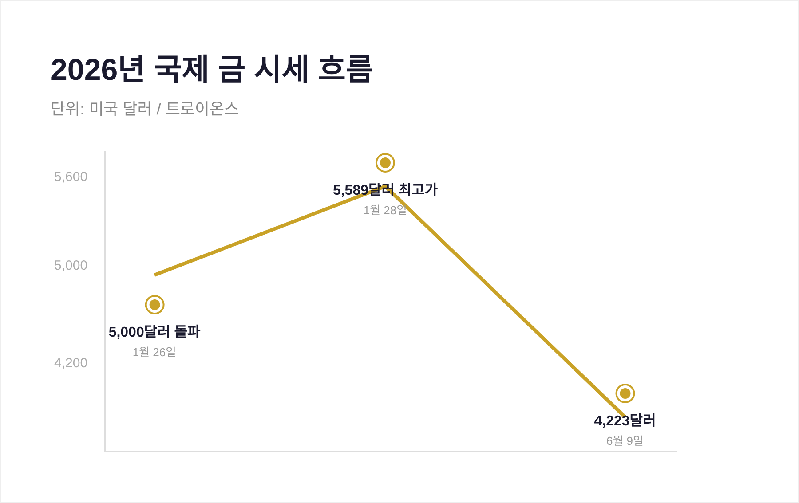
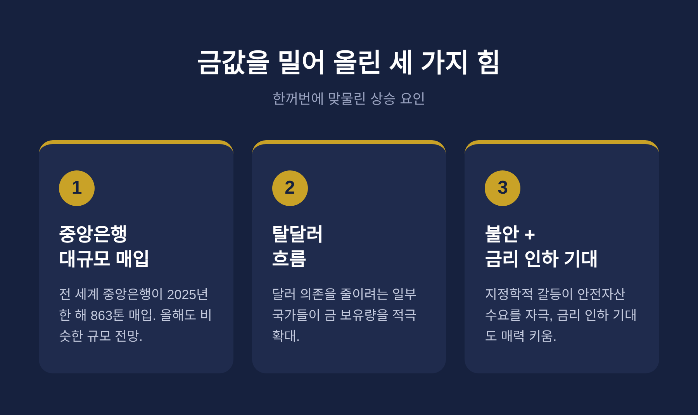
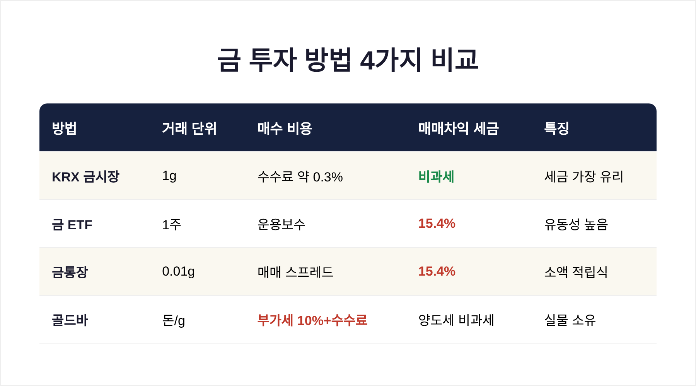

금값 사상 최고 2026 — 안전자산 열풍, 지금 금에 투자해도 될까

이번 글에서는 2026년 들어 사상 최고가를 경신한 금값의 배경과, 지금 금에 투자해도 좋을지를 정리해 보겠습니다.
먼저 결론부터 짧게 말씀드립니다. 금값이 오른 데는 분명한 이유가 있고, 투자 방법도 여러 갈래입니다. 다만 이미 많이 오른 자리라 신중한 접근이 필요합니다. 이 글은 사실 정보를 전하기 위한 것이며, 투자 판단과 그 결과는 온전히 독자 본인의 몫입니다.
지금 금값은 어디까지 왔나
올해 금값은 기록을 새로 썼습니다.
2026년 1월, 국제 금 시세는 온스당 5,000달러 선을 사상 처음으로 넘어섰습니다. 1월 28일에는 한때 5,500달러를 웃도는 자리까지 치솟았습니다.
예전엔 금이 온스당 2,000달러를 넘는 것만으로도 화제였습니다. 지금은 그 두 배가 넘는 가격에서 거래되고 있습니다.
다만 상승이 한 방향으로만 이어진 것은 아닙니다. 6월 들어서는 4,200달러대로 내려오는 등 출렁임도 적지 않았습니다. 오를 때는 가파르게 오르고, 내릴 때는 빠르게 빠지는 흐름입니다.

왜 이렇게 올랐을까
금값을 밀어 올린 힘은 크게 세 가지입니다.
첫째, 중앙은행의 매입입니다. 전 세계 중앙은행은 2025년 한 해에만 863톤의 금을 사들였습니다. 올해도 비슷한 규모가 예상됩니다. 폴란드, 중국, 인도 같은 나라들이 특히 적극적입니다.
둘째, 달러에서 멀어지려는 흐름입니다. 달러 자산이 언제든 묶일 수 있다는 경험을 한 일부 국가들이, 달러 의존을 줄이고 금을 늘리고 있습니다.
셋째, 지정학적 불안과 금리 인하 기대입니다. 세계 곳곳의 갈등이 안전자산 수요를 자극했고, 미국의 금리 인하 가능성이 이자가 없는 금의 매력을 키웠습니다.
세 가지가 한꺼번에 맞물린 셈입니다.

금에 투자하는 네 가지 방법
금을 사는 길은 하나가 아닙니다. 각각 비용과 세금이 다릅니다.
KRX 금시장은 1g 단위로 거래하며, 장내에서 발생한 매매차익이 비과세입니다. 거래수수료는 약 0.3% 수준입니다. 세금 면에서 가장 유리한 편입니다. 단, 실물로 찾으면 부가세 10%가 붙습니다.
금 ETF는 주식처럼 사고팔 수 있어 유동성이 좋습니다. 매매차익에는 배당소득세 15.4%가 붙습니다.
금통장은 0.01g 단위로 소액부터 가능해 적립식에 적합합니다. 차익에는 역시 15.4%가 과세됩니다.
골드바는 실물을 손에 쥐는 안정감이 있고 상속·증여에 유리합니다. 다만 살 때 부가세 10%에 수수료까지 더해져, 시작부터 비용이 큽니다.

그렇다면 지금 사도 될까
여기서부터는 신중하게 말씀드리겠습니다.
전망은 밝은 쪽이 많기는 합니다. 일부 투자은행은 연말 6,000달러까지 내다봅니다. 반면 4,600달러 안팎에 머물 것이라는 보수적 견해도 있습니다. 같은 시장을 두고 목표가가 1,500달러 넘게 벌어져 있습니다.
분명한 것은 지금이 역사적 고점 부근이라는 사실입니다. 전문가들은 올해를 '상승 속 변동성 확대' 국면으로 봅니다. 급등과 조정을 반복하는 계단식 흐름이 될 가능성이 큽니다.
그래서 다수의 전문가가 권하는 방식은 분할 매수입니다. 한 번에 크게 넣기보다, 시기를 나누어 조금씩 담아 평균 단가의 출렁임을 줄이는 방법입니다.
물론 이것도 정답은 아닙니다. 금값이 더 오를지 내릴지는 누구도 단언하지 못합니다.
끝으로 한 마디만 더 드리겠습니다.
금은 불안한 시대에 사람들이 마지막으로 기대는 자산입니다. 그 무게는 분명합니다. 하지만 이미 오른 자리에서는 기회와 위험이 함께 커집니다.
"오를 이유가 분명한 자산일수록, 들어가는 속도는 천천히."
지금 금을 사야 하느냐고 물으신다면, 저는 정답 대신 이렇게 답하겠습니다. 서두르지 않으셔도 됩니다.